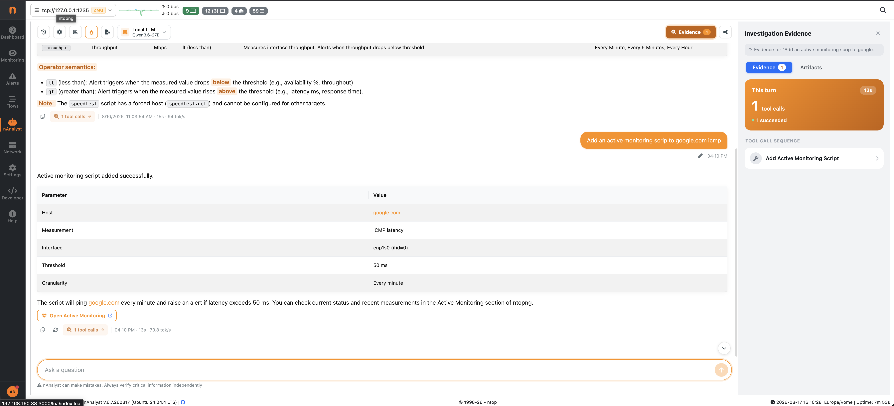

Автоматизация активного мониторинга
nAnalyst может добавлять сценарии активного мониторинга в ntopng с помощью естественного языка, устраняя необходимость навигации по пользовательскому интерфейсу конфигурации мониторинга.
Что такое активный мониторинг?
Подсистема активного мониторинга ntopng периодически проверяет службы и хосты, чтобы убедиться, что они доступны и работают в пределах ожидаемых параметров. Поддерживаемые типы датчиков:
ICMP пинг — базовая проверка достижимости
HTTP/HTTPS — HTTP код состояния и время ответа
Тест скорости — измерение полосы пропускания
Пропускная способность — тест на устойчивую скорость передачи данных
Добавление монитора через nAnalyst
Просто опишите, что вы хотите отслеживать:
"I want to monitor if there is connectivity to https://qubitowl.com"
nАналитик будет:
Выберите соответствующий тип датчика мониторинга (HTTPS в этом примере).
Позвоните в
add_active_monitoring_scriptинструментЗарегистрируйте новый хук мониторинга, который по умолчанию запускается каждую минуту.
Подтвердите добавление скрипта и покажите его конфигурацию.
Монитор немедленно появляется на панели активного мониторинга ntopng вместе со всеми мониторами, настроенными вручную.

Добавление сценария активного мониторинга nAnalyst
Проверка и управление мониторами
Мониторы, добавленные nAnalyst, неотличимы от созданных вручную и управляются через тот же интерфейс активного мониторинга ntopng. В журнале аудита nAnalyst указывается, какой пользователь или агент создал каждый монитор.
Варианты использования
Убедитесь, что недавно обнаруженная внешняя зависимость достижима.
Убедитесь, что внутренняя служба работает после изменения.
Добавьте базовые показатели задержки для отслеживания SLA
Отслеживайте хост, вызвавший оповещение, чтобы убедиться, что он остается доступным.